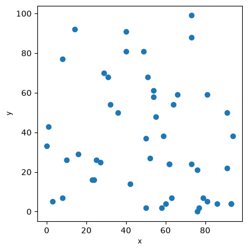
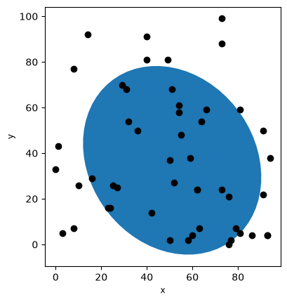
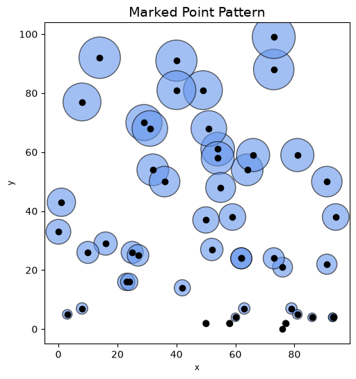
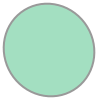
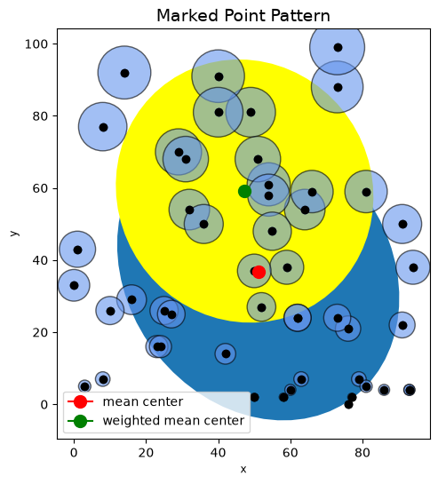

Standard deviational ellipse in pointpats¶
This notebook demonstrates how to compute and visualize the
standard deviational ellipse (SDE) for planar point patterns using
pointpats.centrography.
The SDE provides a compact summary of:
Central location of the point pattern
Dispersion along two principal axes
Orientation of the pattern in the plane
Optional weighting of points (e.g., counts, magnitudes, intensities)
We will:
Construct a simple example point pattern and compute its standard deviational ellipse.
Show how the SDE computation dispatches on input type, including NumPy arrays and GeoPandas GeoDataFrames.
Compare unweighted and weighted ellipses to see how weights affect the ellipse size and orientation.
Explore additional options in the ellipse construction, including corrections that align or differ from CrimeStat-style ellipses.
import geopandas as gpd
import matplotlib.pyplot as plt
import numpy as np
from pointpats import ellipse
import pointpats
1. Example point pattern¶
100 points
randomly distributed in [(0,0), (10, 10)]
seed = 65647437836358831880808032086803839626
rng = np.random.default_rng(seed)
points = rng.integers(0, 100, (50, 2))
points_gdf = gpd.GeoDataFrame(geometry=gpd.points_from_xy(points[:, 0], points[:, 1]))
points_gdf.plot()
<Axes: xlabel='x', ylabel='y'>

2. Dispatching on input type¶
ellipse can take the following inputs
points as a 2-D numpy array
a geodataframe with a point GeoSeries
It is important to note that the return types differ between these two cases.
2.1 Passing an array¶
ellipse_ = ellipse(points)
This will return a tuple with
length of the major axis
length of the minor axis
angle of rotation (in radians)
ellipse_
(np.float64(43.85494662229593),
np.float64(36.28453973005919),
np.float64(-0.9362557045365753))
2.2 Passing a GeoDataFrame¶
ellipse_poly = ellipse(points_gdf)
This will return a shapely Polygon
type(ellipse_poly)
shapely.geometry.polygon.Polygon
3. Unweighted and weighted ellipses¶
The default is to treat the points as an unmarked point pattern and construct the ellipse accordingly.
ellipse_gdf = gpd.GeoDataFrame(geometry=[ellipse_poly])
base = ellipse_gdf.plot()
points_gdf.plot(ax=base, color="k")
<Axes: xlabel='x', ylabel='y'>

3.1 Weighted points¶
If marks are available to attach to each point, the weighted standard deviational ellipse can be constructed. Here we use use the \(y\) coordinate as the weight for demonstration:
# Normalize or scale marker size (you can tune this)
size_scale = 20 # try 10, 20, 50 etc. to get a good size visually
marker_sizes = points[:, 1] * size_scale
fig, ax = plt.subplots(figsize=(8, 6))
base = points_gdf.plot(
ax=ax, markersize=marker_sizes, alpha=0.6, color="cornflowerblue", edgecolor="k"
)
points_gdf.plot(ax=base, color="k")
ax.set_title("Marked Point Pattern", fontsize=14)
Text(0.5, 1.0, 'Marked Point Pattern')

ellipse_w_poly = ellipse(points_gdf, weights=points[:, 1])
ellipse_w_poly

mc = pointpats.mean_center(points)
mc
array([51.1 , 36.88])
wmc = pointpats.weighted_mean_center(points, points[:, 1])
wmc
array([47.3302603 , 59.13665944])
size_scale = 20
marker_sizes = points[:, 1] * size_scale
fig, ax = plt.subplots(figsize=(8, 6))
ellipse_gdf.plot(ax=ax)
gpd.GeoSeries([ellipse_w_poly]).plot(color="yellow", ax=ax)
points_gdf.plot(ax=ax, color="k")
base = points_gdf.plot(
ax=ax, markersize=marker_sizes, alpha=0.6, color="cornflowerblue", edgecolor="k"
)
points_gdf.plot(ax=ax, color="k")
ax.plot(*mc, marker="o", color="red", markersize=10, label="mean center")
ax.plot(*wmc, marker="o", color="green", markersize=10, label="weighted mean center")
ax.legend()
ax.set_title("Marked Point Pattern", fontsize=14);

4. Other options¶
The default option constructs the standard deviational ellipse following the method used in CrimeStat.
ellipse(points)
(np.float64(43.85494662229593),
np.float64(36.28453973005919),
np.float64(-0.9362557045365753))
The default construction can be overridden in one of two (or both) ways.
The first employs the yuill method which employs a different estimator for the major and minor axes lengths:
ellipse(points, method="yuill", crimestatCorr=False)
(np.float64(31.01013014519952),
np.float64(25.65704409535755),
np.float64(-0.9362557045365753))
This results in shorter axes lengths relative to to crimestat.
The second approach drops the degrees of freedom correction used in the default:
ellipse(points, method="yuill", degfreedCorr=False)
(np.float64(42.96889676864705),
np.float64(35.551443156155464),
np.float64(-0.9362557045365753))
Again, this shortens the estimated axes.
Finally, both corrections can be toggled off:
ellipse(points, method="yuill", crimestatCorr=False, degfreedCorr=False)
(np.float64(30.383598285215058),
np.float64(25.138666536685605),
np.float64(-0.9362557045365753))
5. Recap¶
In this notebook, we:
Introduced the standard deviational ellipse (SDE) as a summary of the central location, dispersion, and orientation of a point pattern.
Showed how
pointpats.centrographycan construct an SDE from both NumPy arrays and GeoPandas GeoDataFrames.Compared unweighted and weighted ellipses to highlight how point weights influence the ellipse axes and rotation.
Explored additional construction options, including corrections that control consistency with CrimeStat-style ellipses.
The SDE complements other centrographic measures (mean center, standard
distance) and the quadrat- and distance-based statistics notebooks to
provide a richer description of spatial point pattern structure in
pointpats.